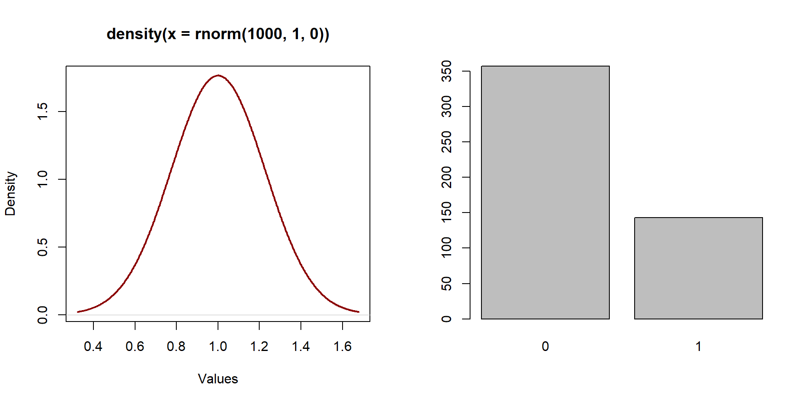
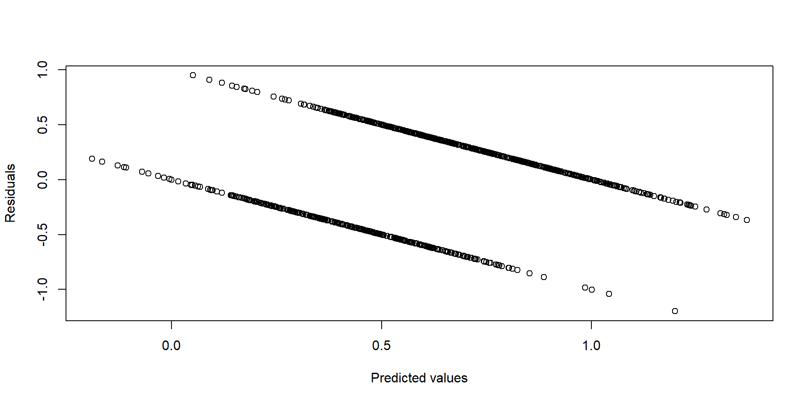
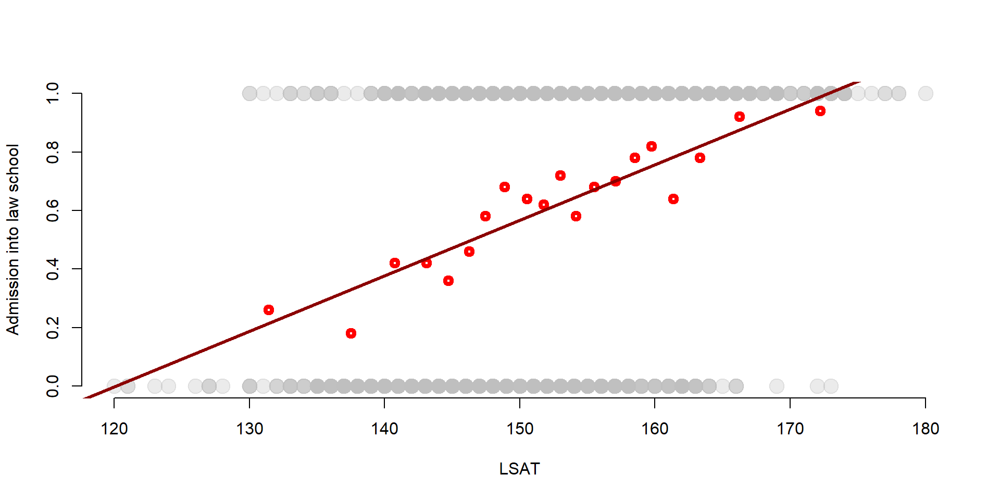
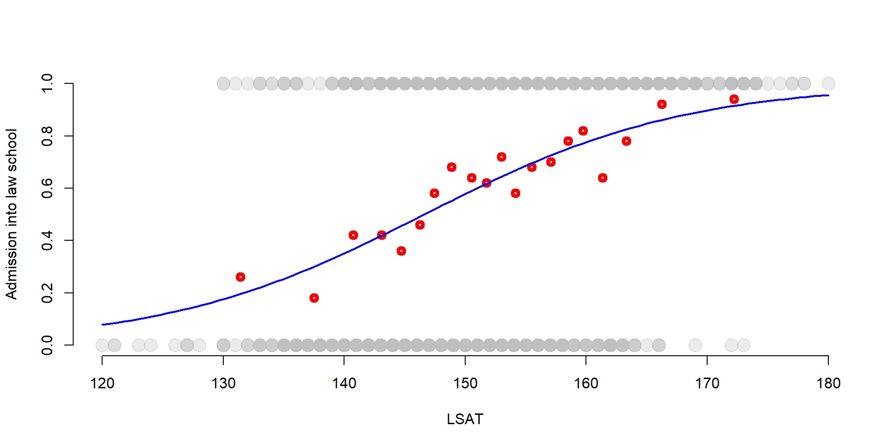
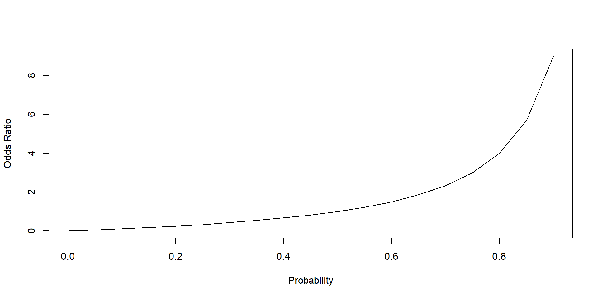
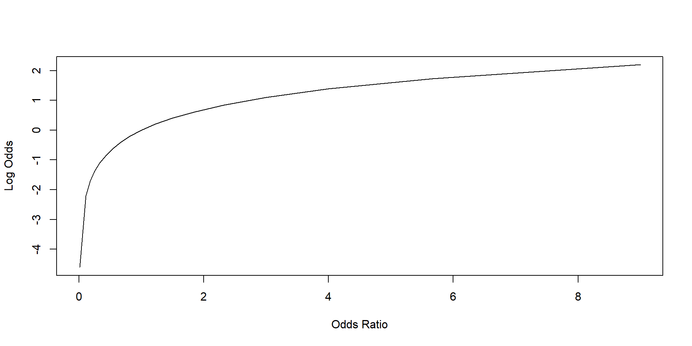
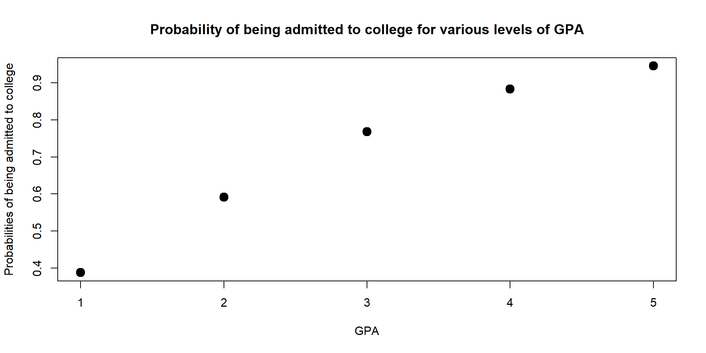
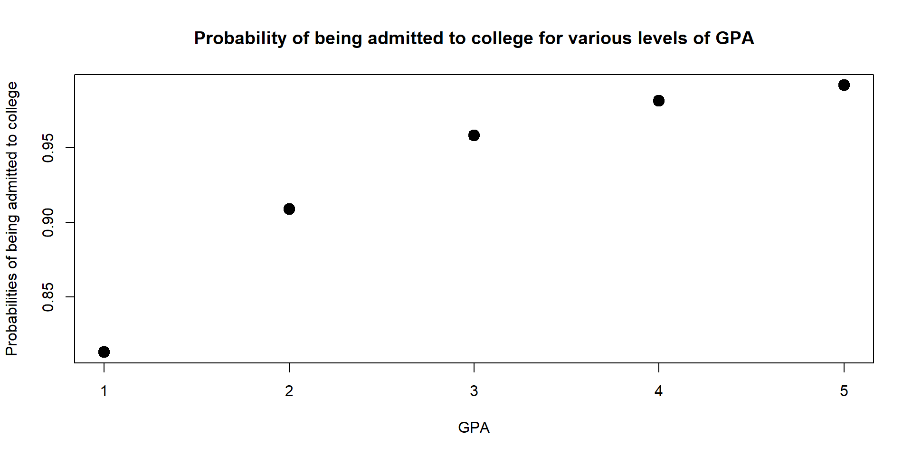
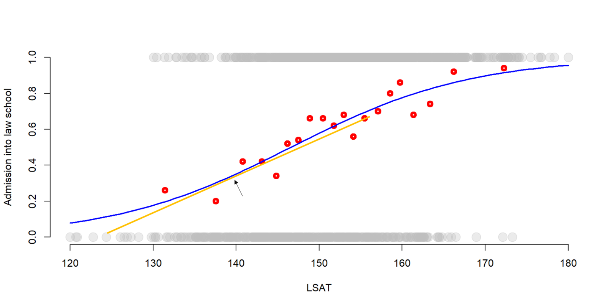
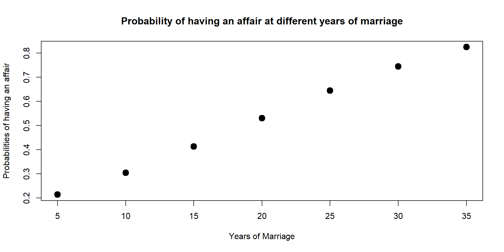

Packages
The following packages will be used in the lecture:
install.packages( "stargazer" )
install.packages( "car" )
install.packages( "wooldridge" )
install.packages( "sandwich" )
install.packages( "lmtest" )
install.packages( "margins" )
install.packages( "scales" )library( stargazer )
library( car )
library( wooldridge )
library( sandwich )
library( lmtest )
library( margins )
library( scales )
library( pander )What you will learn
So far we have been working with continuous, normally distributed variables, as the one represented on the left in graph 1. A normally distributed variable has a distribution similar to a bell.
In this lecture we are going to look at binary variables. Binary variables can assume only two values, conventionally, 0 and 1. Examples of binary variables are:
The distribution of a binary variable is fundamentally different than the distribution of a continuous variable as values are equal only to 0 or 1. A binary variable is represented in the right side of graph1.
par( mfrow = c( 1,2 ) )
plot( density( rnorm( 1000, 1, 0 ) ), xlab = "Values", lwd = 2, col = "darkred" )
X <- rbinom( 500, 1, 0.3 )
barplot( table( X ) )
Figure 1. Distribution of a normal variable
Models with binary variables aim to calculate the likelihood that ‘something’ (an event, participation into a program…) will occur (=1) versus the probability that it will not occur (=0).
Figure 2. US Supreme Courte, Washington DC
We start with a simple example to illustrate the Linear Probability Model. We want to estimate the probability that a student will be admitted to law school based on some key variables. Admission to law school can be challenging, although there are claims that the average score for admission has decreased over the past years.
df <- read.csv( "data/admissions.csv" )Our variables include:
| Variable name | Description |
|---|---|
| \(\text{LSAT}\) | LSAT score (from 120 to 180) |
| \(\text{Essay}\) | Essays score (from 1 to 365) |
| \(\text{GPA}\) | Average GPA (from 0 to 5) |
| \(\text{Admission}\) | The student has been admitted (=1) or not (=0) |
We can have a look at the summary statistics for each variable.
stargazer( df,
type = "html",
omit.summary.stat = c("p25", "p75"),
digits = 2 )| Statistic | N | Mean | St. Dev. | Min | Max |
| Admission | 1,000 | 0.61 | 0.49 | 0 | 1 |
| LSAT | 1,000 | 152.19 | 9.91 | 120 | 180 |
| Essay | 1,000 | 53.16 | 16.55 | 1 | 100 |
| GPA | 1,000 | 2.37 | 0.81 | 0.00 | 5.00 |
We expect that students with higher scores will be more likely to be admitted (i.e., they will have a higher probability of admission).
In previous lectures we used OLS models to estimate the relationship between an outcome variable and some independent variables. We can use a similar approach with a binary variable. This model is called the linear probability model.
\[\begin{equation} \text{Y} = \beta_0 + \beta_1*LSAT + \beta_1*Essay + \beta_1*GPA + \text{e} \tag{1} \end{equation}\]
As before, we use the lm function to estimate our coefficients. Results are summarized in the table below.
# We use the "lm" function to estimate the linear probability model with an OLS estimator.
LPM <- lm( Admission ~ LSAT + Essay + GPA, data=df )
stargazer( LPM,
type = "html", digits = 3,
intercept.bottom = FALSE,
covariate.labels = c("Constant", "LSAT", "Essay", "GPA"),
omit.stat = c("ser","f","rsq","adj.rsq") )| Dependent variable: | |
| Admission | |
| Constant | -3.170*** |
| (0.208) | |
| LSAT | 0.019*** |
| (0.001) | |
| Essay | 0.010*** |
| (0.001) | |
| GPA | 0.132*** |
| (0.016) | |
| Observations | 1,000 |
| Note: | p<0.1; p<0.05; p<0.01 |
Results from a LPM can be interpreted in the same way we interpret results from an OLS model. However, in a LPM we refer to the outcome in terms of probability. For instance:
Yet there are some limitations when using an OLS estimator with a binary variable.
# Save the residuals
res <- LPM$residuals
# Predicted values based on the linear probability model
yhat <- predict( LPM )
# Plot residuals against the predicted value.
# If the model is homoskedastic, we would
# observe a random distribution. If the model
# is heteroskedastic, we would observe some
# kind of correlation between residuals and
# predicted values.
plot( yhat, res,
xlab = "Predicted values",
ylab = "Residuals" )
Figure 3. Residuals vs fitted values
To overcome heteroskedasticity, we can use robust standard errors . Robust standard errors allow the variance of the residuals to be difference across observations and “fix” the standard errors accordingly.
# Note: you need to install the lmtest and
# sandwich packages to run the following line.
# Calculate robust standard errors
coeftest( LPM, vcov = vcovHC(LPM, type="HC1") )##
## t test of coefficients:
##
## Estimate Std. Error t value Pr(>|t|)
## (Intercept) -3.16971981 0.17294922 -18.3275 < 2.2e-16 ***
## LSAT 0.01939855 0.00114302 16.9713 < 2.2e-16 ***
## Essay 0.00965468 0.00071493 13.5043 < 2.2e-16 ***
## GPA 0.13235103 0.01497754 8.8366 < 2.2e-16 ***
## ---
## Signif. codes: 0 '***' 0.001 '**' 0.01 '*' 0.05 '.' 0.1 ' ' 1In the previous example, the standard errors change little after we use a robust estimator. For GPA, the standard error decreases from 0.016 to 0.0149. The essay standard error decreases from 0.001 to 0.0006.
We can see this in practice. When using an OLS estimator with a binary dependent variable, it’s like grouping your DVs based on a independent variable and calculating the average probability for each group.
This process is easily understood with an example. Let’s think about our previous model and see what happens when we predict the probabilities of being admitted to a law school based on LSAT scores.
First, we order our observations by LSAT score and take the 50 students with the lowest LSAT score. Their average LSAT score is 131.44 while their average probability of being admitted to law school is equal to 0.16. The probability of being admitted to law school is simply the average number of students admitted on the total number of students in the group.
# We order our observation by LSAT score
df <- df[ order( df$LSAT ), ]
# We can calculate the LSAT mean for the 50 students with the lowest score.
mean( df$LSAT[ 1:50 ] )## [1] 131.44# We calculate the mean of Admission, which represents the probability of being admitted to law school for the 50 students with the lowest LSAT score.
mean( df$Admission[ 1:50 ] )## [1] 0.26We can repeat the process and take the average probability for the 51st observation to the 100th observations. The probability of being admitted to law school is equal to 0.34, while the average LSAT score has also increased to 137.54. This suggests a positive relationship between LSAT and Admission.
# We can calculate the LSAT mean for the 51st-100th students in the LSAT score ranking.
mean( df$LSAT[ 51:100 ] )## [1] 137.52# We calculate the mean of Admission, which represents the probability of being admitted to law school for the 51st-100th students in the LSAT score ranking.
mean( df$Admission[ 51:100 ] )## [1] 0.18We can apply the same process for all groups of 50 observations (101st-150th, 151st-200th, and so on) and plot the average LSAT score of each group against the admission probability for that same group. We also add the regression line for a linear probability model including only the LSAT score.
# We order our observation by LSAT score
df <- df[order(df$LSAT),]
# We create groups of 50 observation.
df$d <- rep( 1:20, each=50 )
# Average LSAT score for each group.
# Note that the LSAT variable is positioned
# in the second column of the df dataset,
# so it can be indicated at df[, 2].
gr_mean2 <- aggregate( df[,"LSAT"], list(df$d), mean )
# We calculate the probability of being admitted to law school. The Admission variable is in the first column of the dataset.
gr_mean <- aggregate(df[, 1], list(df$d), mean)
# We plot the average LSAT score against the group average probability of being admitted to law school.
plot( df$LSAT, df$Admission,
col = adjustcolor("gray", alpha.f= 0.3),
pch=19, bty="n", cex = 2,
xlab="LSAT", ylab="Admission into law school" )
points( gr_mean2$x, gr_mean$x, col = "red", lwd = 4) #Add points to the graph
abline(lm(df$Admission ~ df$LSAT), col = "darkred", lwd = 3) #Add a regression line
We can observe that:
the OLS line does a pretty good job in approximating the average probabilities, suggesting that the LPM model is a valid estimation of the probability to be admitted into law school. This is especially true for the observations in the middle.
However, the OLS ‘misses’ observations that are at the extreme points - when the LSAT scores are particularly high or low, the OLS line does not approximate the probability very well.
Because of this last point, several persons prefer a logit model over a LPM. In a logit model, we move from a linear relationship between X and Y to a s-shaped relationship (see “The logit model”).
Values range from -0.015 to 1.30. But a probability greater than 1 is not realistic. This is another reason why most people prefer a logit model. A logit model will contraint the outcome variable to range from 0 to 1.
summary(yhat)## Min. 1st Qu. Median Mean 3rd Qu. Max.
## -0.1889 0.4306 0.5970 0.6090 0.7909 1.3693A logistic (or logit) model relies on a S-shaped logistic function to estimate the likelihood of an event to occur.
We can see the S-shaped logistic function in the graph below. Again we plot LSAT scores against the probability of being admitted to law school. We also add the group average probabilities that we estimate in the previous section.
But, instead than plotting the regression line of the LPM, we plot the s-shape function of a logit model.
While there are not big differences in the middle of the graph, the s-shaped function better approximates the values at the two extremes (very high or very low LSAT scores).
# Logit model
log <- glm( Admission ~ LSAT, data = df, family = "binomial")
# Plot of LSAT scores against the probability of being admitted to law school
plot(df$LSAT, df$Admission, col = adjustcolor("gray", alpha.f= 0.3), pch=19, bty="n", cex = 2, xlab="LSAT", ylab="Admission into law school")
points(gr_mean2$x, gr_mean$x, col = "red", lwd = 4) #Group averages
# Logit s-shaped curve
curve( predict( log, data.frame(LSAT = x), type = "response"),
lty = 1, lwd = 2, col = "blue",
add = TRUE)
Figure 4. Binary function
In order to utilize a s-shaped function, we need to move from an OLS model to a Maximum Likelihood estimator. It is beyond the scope of this lecture to enter into detailes about maximum likelihood estimation. We present only some key points:
An estimation method is a statistical technique that helps us to find a set of parameters (the coefficients) generating the data.
In the case of a binary variable, we assume that the generation process follows an S-shaped curve as the one we plotted in figure 4 instead than a linear curve as in the OLS model.
The ML estimator utilizes an iterative process - in simple words, it tries several combination of values until it finds the one that gets closer to the real data. The output is a set of a coefficients that predict our dependent variable.
When using a statistical software, these values are searched by various algorithms.
The Maximum Likelihood is easy to implement. The glm function in R utilizes a Maximum Likelihood Estimator to calculate the coefficients. We can use the same data of the LPM (see “Linear probability model (LPM)”) to run a logit model predicting the probability of being admitted to law school.
# The glm function has a code similar to the lm function. But you need to specify the generation process (i.e., the curve that you want to use). In this case, we have a binary dependent variable so we use a 'binomial' distribution (the s-shaped curve)
log <- glm( Admission ~ LSAT + Essay + GPA, data = df, family = "binomial")
stargazer( log,
type = "html", digits = 3,
intercept.bottom = FALSE,
covariate.labels = c("Constant", "LSAT Score", "Essay", "GPA"),
omit.stat = c("ser","f","rsq","adj.rsq") )| Dependent variable: | |
| Admission | |
| Constant | -23.088*** |
| (1.728) | |
| LSAT Score | 0.122*** |
| (0.010) | |
| Essay | 0.060*** |
| (0.006) | |
| GPA | 0.828*** |
| (0.105) | |
| Observations | 1,000 |
| Log Likelihood | -487.499 |
| Akaike Inf. Crit. | 982.999 |
| Note: | p<0.1; p<0.05; p<0.01 |
The output does not fundamentally change from an OLS model. We have the coefficients, standard errors and significance levels.
The two parameter reported at the bottom of the table are the Log Likelihood and the Akaike Inferior Criteria (AIC). Both values are not meaningful per se, but we will use them to compare across models.
the log likelihood is the logarithm of the likelihood function - i.e., the probability of observing the true values of Y given our coefficients (“Maximum Likelihood Estimation”). We can use the log likelihood to compare across models. The lower the log-likelihood, the better the model fits the data.
the AIC represents how much information gets lost when estimating the model. Each model losses some information (each model has residuals!) but higher quality models will have a lower AIC, which indicates that less information has been lost.
While there is not a “good” AIC or a “good” log likelihood, you can use these two parameters to compare models.
The tricky part of a logit model is the interpretation of the coefficients. In this section we explain why it is problematic before discussing an example.
One problem with modeling probabilities is the limited range, as a probability ranges only from 0 to 1. The LPM solves this problem by ignoring the limited range of the dependent variable and predicting values that are smaller than 0 or greater than 1.
By contrast, the logit model transforms the dependent variable so that it assumes values ranging from negative infinite to positive infinite as shown in the table below:
Figure 5. Variable transformation
The first transformation is from probabilities to odds ratios. Odds ratio are a probability ratio; if the probability of an event to occur is equal to 0.4, then the probability of the event not to occur is 0.6 (= 1 - 0.4). The odds ratios are:
in other words 0.4 / 0.6 = 0.67. The probability of an event to occur is 0.67 against 1.
We can take another example. If an event has a probability to occur equal to 0.8, then its probability not to occur is 0.2. The odds ratio is 0.8/0.2 = 4. The event is 4 times more likely to occur than not to occur.
Graph 6 shows the relationship between probabilities and odds ratios. An increase in the probability of an event to occur increases its odds ratio.
Note that odds ratios can assume values greater than 1 but not smaller than 0. Odds ratios can assume only positive values, whereas an odds ratio greater than 1 indicates that an event is more likely to occur than not to occur. Vice versa an odds ratio smaller than 1 indicates that an event is more likely not to occur than to occur.
# Some probabilities
pr <- c(0.001, 0.01, 0.10, 0.15,
0.2, 0.25, 0.3, 0.35, 0.4,
0.45, 0.5, 0.55, 0.6, 0.65,
0.7, 0.75, 0.8, 0.85, 0.9)
# We put them in a data frame.
data = as.data.frame(pr)
# Calculate their respective odds ratios
data$OR = round(data$pr/(1-data$pr), 2)
# We plot probabilities against their odds ratios.
plot(data$pr, data$OR,
xlab = "Probability",
ylab = "Odds Ratio",
lty = 1, type = "l")
Figure 6. Relationship between probability and odd ratio
Second, we transform the odds ratios into log odds using a logarithm transformation. This is called the logit transformation. A logit transformation enlarges the range of the value of our DV to include negative numbers.
We can see it by plotting the odds ratios against the log odds. The log odds can assume both positive and negative values.
# We use a logit transformation to transform the odds ratios into log odds.
data$LogsO = log(data$OR)
# We plot the odds ratios against the log odds.
plot( data$OR, data$LogsO,
xlab = "Odds Ratio",
ylab = "Log Odds",
lty = 1, type = "l")
Log odds represent the unit of analysis of our coefficients. Each coefficient represents a one-unit change in the log odds that the event will occur.
While the transformation from a binary variable to log odds facilitate the model estimation, it does not help with interpretation.
To get more meaningful information, we can start by transforming the coefficients into logs ratio. We reverse the log transformation by exponentiating the coefficients.
exp( coef( log ) )## (Intercept) LSAT Essay GPA
## 9.396176e-11 1.129936e+00 1.062257e+00 2.289187e+00We can also combine them with the confidence intervals.
exp( cbind( OR = coef(log), confint(log) ) )## OR 2.5 % 97.5 %
## (Intercept) 9.396176e-11 2.846439e-12 2.502913e-09
## LSAT 1.129936e+00 1.108359e+00 1.153253e+00
## Essay 1.062257e+00 1.050960e+00 1.074238e+00
## GPA 2.289187e+00 1.869463e+00 2.824405e+00Let’s read some results.
Note: if you remember how odds ratio are calculated from section “Interpretation”, odds ratio below 1 indicates that the probability of success decreases, while odds ratio above 1 indicates that the probability increases.
Another option is to calculate probabilities.
Probabilities are calculated according to the following formula:
\[\begin{equation} \begin{split} \text{p=} \frac{e^{\beta{_0} + \beta{_1}*X_1 + \beta{_2}*X_2 + \beta{_3}*X_3 }}{e^{\beta{_0} + \beta{_1}*X_1 + \beta{_2}*X_2 + \beta{_3}*X_3 } - 1} = \frac{1}{ 1 + b^{-\beta{_0} + \beta{_1}*X_1 + \beta{_2}*X_2 + \beta{_3}*X_3 }} \end{split} \tag{2} \end{equation}\]
Note that this formula convert the sum of the odd logs (all the coefficient) back into log ratios (by exponentiating them), and then in probabilities. Let’s do a practical example.
We noted before that the relationship between X and Y changes depending on the value of X (graph 4). Because of that, we need to fix values for each of our coefficient.
Ideally, you want to pick values that make sense for the variables. It is common to take the mean. For instance, we can look at the probability to be admitted to college for an average student (i.e., average LSAT, essay score and GPA).
mean(LSAT)## [1] 152.187mean(Essay)## [1] 53.162mean(GPA)## [1] 2.36682We can plug this number into our formula (2).
\[\begin{equation} \begin{split} \text{p=} \frac{1}{ 1 + b^-{(-23.059 + 0.122*152.186 + 0.061*53.158 + 0.825*2.3667)}} \end{split} \tag{2} \end{equation}\]
We can use R to make the calculation.
1 / ( 1 + exp(-(-23.059 + 0.122*152.186 + 0.061*53.158 + 0.825*2.3667)))## [1] 0.668821The probability of being admitted to college for an average student is 0.66.
If you have several independent variables, you can also use the function predict to calculate the probability, as illustrated below.
# We first create a new dataset where our independent variables assume the values we are interested in. In this case, male will be equal to 1, while all other variables are set at their mean.
data2 <- with( data,
data.frame( LSAT=mean(LSAT),
Essay=mean(Essay),
GPA = mean(GPA) ))
# We then predict our probabilities.
# Note that you need to include the
# option "type" set to "response" to
# specify that the model is non-linear.
data2$Admission_Prop <- predict( log, newdata = data2, type = "response" )
data2$Admission_Prop## [1] 0.662429Again, the probability is equal to 0.66.
You can create several probabilities. For instance, let’s see what happens if we assume our student has a GPA of 4.
# We first create a new dataset where our
# independent variables assume the values we
# are interested in. In this case, male will
# be equal to 1, while all other variables
# are set at their mean.
data2 <- with(data, data.frame(LSAT = mean(LSAT), Essay = mean(Essay), GPA = 4))
# We then predict our probabilities. Note that
# you need to include the option "type" set to
# "response" to specify that the model is non-linear.
data2$Admission_Prop <- predict(log, newdata = data2, type = "response")
data2$Admission_Prop## [1] 0.8835753In this case, the probability increases to 0.88.
We can also look at our the probability changes across multiple values of GPA and plot results on a graph.
The graph shows that the higher the GPA, the higher the probability to get into college.
However, the marginal effect decreases - moving from a GPA of 2 to a GPA of 3 increases the probability of being admitted more than moving from a GPA of 4 to a GPA of 5. We discuss more marginal effects in the next section.
data2 <- with( data,
data.frame( LSAT = mean(LSAT),
Essay = mean(Essay),
GPA = c(1,2,3,4,5) ) )
data2$Admission_Prop <- predict(log, newdata = data2, type = "response")
data2$Admission_Prop## [1] 0.3874941 0.5915407 0.7682641 0.8835753 0.9455729plot(data2$GPA, data2$Admission_Prop,
xlab = "GPA",
ylab = "Probabilities of being admitted to college",
main = "Probability of being admitted to college for various levels of GPA",
lwd = 6)
Figure 7. Probability of being admit based on GPA
You should also note that your interpretation of the graph should consider that you are keeping Essay and LSAT at their mean value. The graph will be different if we change the values of LSAT and essay since the probability depends upon the effect of all covariates in the model.
For instance, let’s at how probabilities change for a student who scored at the 95th quantile in both her GPA and Essay.
data2 <- with(data, data.frame( LSAT = quantile(LSAT, 0.95),
Essay = mean(Essay, 0.95),
GPA = c(1,2,3,4,5)))
data2$Admission_Prop <- predict(log, newdata = data2, type = "response")
data2$Admission_Prop## [1] 0.8130873 0.9087439 0.9579763 0.9811975 0.9916985plot(data2$GPA, data2$Admission_Prop,
xlab = "GPA",
ylab = "Probabilities of being admitted to college",
main = "Probability of being admitted to college for various levels of GPA",
lwd = 6)
Marginal effects is also a common approach to interpretation. Marginal effects estimate the tangent line of the s-shaped function in a specific point. A tangent line at a given point is the straight line that “touches” the curve at that point and have a similar slope (you might remember discussing tangent lines in calculus or you can find some more explanation here).
Graph 8 represents a tangent line.

Figure 8. Variable transformation
We can calculate the margins by using the margins function in R and applied it to our previous model.
For instance, let’s look at the marginal effect when the GPA is at its mean value.
## To use the margins command, you need to
# identify the predictive logit model (log);
# set the value of the variable that you are
# interested in using "at", and then request
# the outcome for that specific variable.
margins(log, at = list(GPA = mean(GPA)), variable = "GPA")## at(GPA) GPA
## 2.367 0.1376When GPA is at its mean, an increas in GPA will increase the probability of being admitted of 0.1373.
This might get more clear if we look at the example we discussed in graph (7). We noted that the marginal effect is greater for a student with a GPA of 3 than for a student with a GPA of 4. The margins function allows to quantify this.
## In this function we fix our GPA to 3 and 4.
margins(log, at = list(GPA = c(3,4)), variable = "GPA")## at(GPA) GPA
## 3 0.12468
## 4 0.09564For a student with a GPA of 3 the marginal effect of increasing its GPA is 0.12. But for a student with a GPA of 4 the increase in probability is only equal to 0.09. It’s more convenient to invest on GPA for a student with a low GPA.
In general, we can look at the marginal effects for significant values - for instance, the first and third quantile (25% and 75%, respectively).
## In this function we fix our GPA to 3 and 4.
GPA_25 = margins(log, at = list(GPA = quantile(GPA, 0.25)), variable = "GPA")
GPA_75 = margins(log, at = list(GPA = quantile(GPA, 0.75)), variable = "GPA")## In this function we fix our GPA to 3 and 4.
margins(log, at = list(LSAT = quantile(LSAT, 0.25)), variable = "LSAT")## at(LSAT) LSAT
## 145 0.02357margins(log, at = list(LSAT = quantile(LSAT, 0.75)), variable = "LSAT")## at(LSAT) LSAT
## 159 0.01779## In this function we fix our GPA to 3 and 4.
margins(log, at = list(Essay = quantile(Essay, 0.25)), variable = "Essay")## at(Essay) Essay
## 41 0.01115margins(log, at = list(Essay = quantile(Essay, 0.75)), variable = "Essay")## at(Essay) Essay
## 65 0.008894GPA provides the greatest marginal effect for students both at 25th and 75th percentile.
Margins is also used to calucalte the average marginal effect, which represent the average slope of all tangents for all values of a variable.
#Calculate margins
m <- margins(log)
# Add p-value, standard errors, and confidence intervals.
summary(m)## factor AME SE z p lower upper
## Essay 0.0098 0.0007 14.0506 0.0000 0.0084 0.0111
## GPA 0.1338 0.0151 8.8825 0.0000 0.1043 0.1633
## LSAT 0.0197 0.0012 17.0798 0.0000 0.0175 0.0220The average marginal effect for GPA is 0.13, for Essay is 0.0098 and for LSAT is 0.0197.
Figure 9. Covariance structure of an omitted variable model
To discuss interpretation, let’s start with a simple model predict the likelihood of having an affair. Our independent variables include: gender, age, years of marriage, and happiness in the marriage.
Data are available in the Wooldridge package and were used by Fair (1978) to investigate extra-martical affairs.
# library( "wooldridge" )
data('affairs')
data <- affairsWe are going to use the following independent variables
| Variable name | Description |
|---|---|
| \(\text{affairs}\) | If the person has had an affair in the past year |
| \(\text{Male}\) | =1 if male, =0 is female |
| \(\text{Age}\) | Average age |
| \(\text{yrsmarr}\) | Years of marriage |
| \(\text{ratemarr}\) | Reported happiness within the marriage from 5 = very happy to 1 = very unhappy |
For a full data dictionary in the Wooldrige package type help(affairs).
We can have a look at the summary statistics for each variable.
stargazer( data,
type = "html",
omit.summary.stat = c("p25", "p75"),
digits = 2 )| Statistic | N | Mean | St. Dev. | Min | Max |
| id | 601 | 1,059.72 | 914.90 | 4 | 9,029 |
| male | 601 | 0.48 | 0.50 | 0 | 1 |
| age | 601 | 32.49 | 9.29 | 17.50 | 57.00 |
| yrsmarr | 601 | 8.18 | 5.57 | 0.12 | 15.00 |
| kids | 601 | 0.72 | 0.45 | 0 | 1 |
| relig | 601 | 3.12 | 1.17 | 1 | 5 |
| educ | 601 | 16.17 | 2.40 | 9 | 20 |
| occup | 601 | 4.19 | 1.82 | 1 | 7 |
| ratemarr | 601 | 3.93 | 1.10 | 1 | 5 |
| naffairs | 601 | 1.46 | 3.30 | 0 | 12 |
| affair | 601 | 0.25 | 0.43 | 0 | 1 |
| vryhap | 601 | 0.39 | 0.49 | 0 | 1 |
| hapavg | 601 | 0.32 | 0.47 | 0 | 1 |
| avgmarr | 601 | 0.15 | 0.36 | 0 | 1 |
| unhap | 601 | 0.11 | 0.31 | 0 | 1 |
| vryrel | 601 | 0.12 | 0.32 | 0 | 1 |
| smerel | 601 | 0.32 | 0.47 | 0 | 1 |
| slghtrel | 601 | 0.21 | 0.41 | 0 | 1 |
| notrel | 601 | 0.27 | 0.45 | 0 | 1 |
First, we estimate the logit model using the glm function.
log <- glm( affair ~ as.factor(male) + age +
yrsmarr + ratemarr,
data = data,
family = "binomial")
stargazer( log,
type="html", digits=3,
intercept.bottom = FALSE,
covariate.labels = c("Constant",
"Male",
"Age",
"Years of marriage",
"Happiness in Marrigae" ),
omit.stat = c("ser","f","rsq","adj.rsq") )| Dependent variable: | |
| affair | |
| Constant | 1.185** |
| (0.563) | |
| Male | 0.391* |
| (0.205) | |
| Age | -0.045** |
| (0.018) | |
| Years of marriage | 0.095*** |
| (0.029) | |
| Happiness in Marrigae | -0.483*** |
| (0.088) | |
| Observations | 601 |
| Log Likelihood | -312.787 |
| Akaike Inf. Crit. | 635.575 |
| Note: | p<0.1; p<0.05; p<0.01 |
Results show that all the independent variables are significantly correlated with the likelihood of having had an affair in the past year. Age and Happiness in Marriage decrease the likelihood of having had an affair in the past year, while gender and years of marriage increase the likelihood of having had an affair in the past year.
Yet the interpretation is not very meaningful at this stage. Coefficient represent changes in the log odds. For instance, the Years of Marriage variable indicates that the log odds increase 0.095 for each year of marriage. This information is not very easy to process.
We provide three alternative ways to interpret the coefficients based on what we discussed above:
First, we look at odds ratios and their confidence intervals.
exp( cbind( OR = coef(log), confint(log) ) )## OR 2.5 % 97.5 %
## (Intercept) 3.2714934 1.1006055 10.0482888
## as.factor(male)1 1.4778886 0.9910584 2.2118497
## age 0.9562074 0.9226287 0.9894904
## yrsmarr 1.0996014 1.0394146 1.1644512
## ratemarr 0.6170588 0.5182310 0.7323792Now we can provide a better interpretation of each coefficient.
To calculate probabilities, we ned to pick the mean of each variable (you should remember this from before). For instance, we can look at the probability to have an affair for a man, who has an average age, average years of marriage, and average happiness.
# We first create a new dataset where our independent variables assume the values we are interested in. In this case, male will be equal to 1, while all other variables are set at their mean.
data2 <- with(data, data.frame(male = 1, age = mean(age), yrsmarr = mean(yrsmarr), ratemarr = mean(ratemarr)))
# We then predict our probabilities. Note that you need to include the option "type" set to "response" to specify that the model is non-linear.
data2$affairP <- predict(log, newdata = data2, type = "response")
data2$affairP## [1] 0.2687999The probability of having had an affair in the past year for our ‘average’ man is 0.27.
We can play around. For instance, you can look at the probability for a man that has been married long time
data2 <- with(data, data.frame(male = 1, age = mean(age), yrsmarr = 30, ratemarr = mean(ratemarr)))
data2$affairP <- predict(log, newdata = data2, type = "response")
data2$affairP## [1] 0.7448364The probability increases to 0.74!
The difference between the two probabilities is often called a “discrete change”, which refers to how much the probability changes as we increase or decrease the value of one independent variable. In this case, the discrete change from a man with an average length of marriage to a man with 30 years of marriage is equal to 0.47.
We can also calculate predicted probabilities at multiple points and plot them on a graph as we did with GPA. For instance, here we can look at the predicted probabilities at different years of marriage.
data3 <- with(data, data.frame(male = 1, age = mean(age), yrsmarr = c(5,10,15,20,25,30,35), ratemarr = mean(ratemarr)))
data3$affairP <- predict(log, newdata = data3, type = "response")
data3$affairP## [1] 0.2137554 0.3041324 0.4126654 0.5304078 0.6448598 0.7448364 0.8243350plot(data3$yrsmarr, data3$affairP, xlab = "Years of Marriage", ylab = "Probabilities of having an affair", main = "Probability of having an affair at different years of marriage", lwd = 6)
From 5 years of marriage to 35 years of marriage, the probabilities increases of 21 percentage points.
We can use a similar approach for dummy and categorical variables. For instance, we can compare the probability for man and woman. In this case, we want the variable male to be both equal to 1 and 0.
data2 <- with(data, data.frame(male = c(0,1), age = mean(age), yrsmarr = mean(yrsmarr), ratemarr = mean(ratemarr)))
data2$affairP <- predict(log, newdata = data2, type = "response")
data2$affairP## [1] 0.1991948 0.2687999We can see how the probability changes between men and women. For women the probability is equal to 0.2 while for the men the probability is equal to 0.27. The difference is approximately 0.07.
We can also add a categorical variable to our model to look at whether religiosity affects the probability of having had an affair.
The variable has 5 categories: 5 = very relig., 4 = somewhat, 3 = slightly, 2 = not at all, 1 = anti-religion.
data('affairs')
data = affairs
log <- glm(affair ~ as.factor(male) + age + yrsmarr + ratemarr + as.factor(relig), data = data, family = "binomial")
stargazer( log,
type = "html", digits = 3,
intercept.bottom = FALSE,
covariate.labels = c("Constant",
"Male",
"Age",
"Years of marriage",
"Happiness in Marrigae",
"Not at all religious",
"Slightly religious",
"Somewhat religious",
"Very religious"),
omit.stat = c("ser","f","rsq","adj.rsq") )| Dependent variable: | |
| affair | |
| Constant | 1.967*** |
| (0.668) | |
| Male | 0.396* |
| (0.209) | |
| Age | -0.042** |
| (0.018) | |
| Years of marriage | 0.109*** |
| (0.030) | |
| Happiness in Marrigae | -0.484*** |
| (0.091) | |
| Not at all religious | -0.943*** |
| (0.365) | |
| Slightly religious | -0.578 |
| (0.369) | |
| Somewhat religious | -1.530*** |
| (0.372) | |
| Very religious | -1.407*** |
| (0.452) | |
| Observations | 601 |
| Log Likelihood | -301.335 |
| Akaike Inf. Crit. | 620.671 |
| Note: | p<0.1; p<0.05; p<0.01 |
We can look at the predicted probabilities for each level of religiosity.
data2 <- with(data, data.frame(male = 1, age = mean(age), yrsmarr = mean(yrsmarr), ratemarr = mean(ratemarr), relig = c(1,2,3,4,5)))
data2$affairP <- predict(log, newdata = data2, type = "response")
data2$affairP## [1] 0.4936917 0.2753018 0.3536455 0.1743431 0.1927715In this case, people who are anti-religion are the most likely to have an affair, while individuals that are somewhat religious or very religious are less likely to have an affair.
As we did before we can calculate the margins by using the margins function in R and applied it to our previous model.
#Calculate margins
m <- margins(log)
# Add p-value, standard errors, and confidence intervals.
summary(m)## factor AME SE z p lower upper
## age -0.0069 0.0030 -2.3324 0.0197 -0.0128 -0.0011
## male1 0.0652 0.0343 1.9035 0.0570 -0.0019 0.1324
## ratemarr -0.0795 0.0138 -5.7460 0.0000 -0.1066 -0.0524
## relig2 -0.1887 0.0753 -2.5047 0.0123 -0.3363 -0.0410
## relig3 -0.1213 0.0783 -1.5486 0.1215 -0.2747 0.0322
## relig4 -0.2773 0.0725 -3.8258 0.0001 -0.4194 -0.1352
## relig5 -0.2609 0.0815 -3.2027 0.0014 -0.4205 -0.1012
## yrsmarr 0.0178 0.0048 3.6970 0.0002 0.0084 0.0273The highest average marginal effect is being a male!
We can also look at marginal effects at key values, for instance 25th and 75th quantile for years of marriage.
margins(log, at = list(yrsmarr = quantile(data$yrsmarr, 0.25)), variable = "yrsmarr")## at(yrsmarr) yrsmarr
## 4 0.0145margins(log, at = list(yrsmarr = quantile(data$yrsmarr, 0.75)), variable = "yrsmarr")## at(yrsmarr) yrsmarr
## 15 0.02253In this case…
There key points that you need to remember about LPM and logit models:
Both PLM and logit models aim to predict probabilities. We want to estimate how likely an event is.
Coeffients are generally interpreted as increase or decrease in probabilities. BUT
Because probabilities range only from 0 to 1, we transform the data, first in odds ratio and then in log odds. This transformation allows to work with continuous unbounded variables.
To interpret results from a logit model, we need to transform our variable back into odds ratio and finally probabilities.
Probabilities and discrete changes in probabilities are the easiest way to interpret results.
Marginal effects represent the tangent line slope at a given point. It helps us understand how probabilities change across different individuals.
There are several information online about logit models. These are two good resources that you can look at: